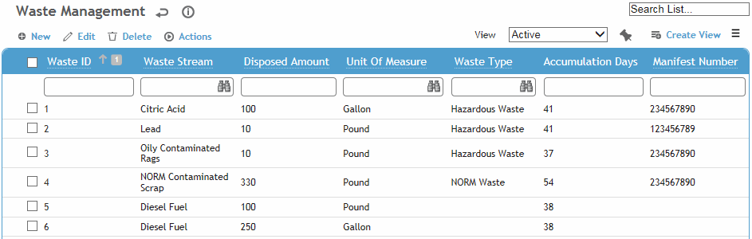
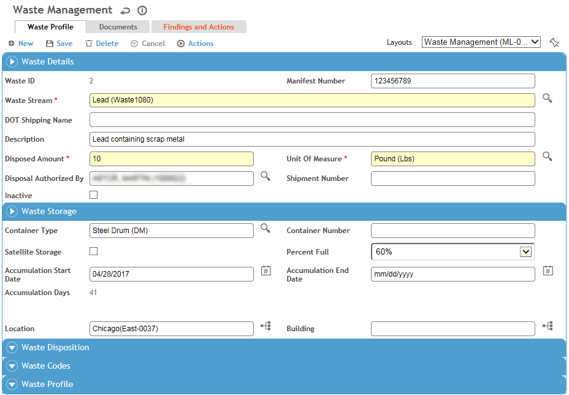

If you are ready to record the shipment of the waste, use the Waste Shipment function instead; it includes a tab to record the waste the same as described below. See Tracking Waste Shipments.
In the Environmental menu, click Waste Management.
Use the Site Selector (at the top of the Environmental menu) to view just the records related to a particular GDDLOFB node.
You can also use the Waste Profiles module in the Environmental menu to view just the profiles in the selected site and open a profile from there. You may need to add this module to your menu (see Customizing Your Menu), and you must be granted the appropriate permission.

Click a link to view details of a waste record, or click New to record a new waste record.

On the Waste Profile tab:
Select the Waste Stream and enter the Disposed Amount and select the UnitsOfMeasure.
Record information about the storage and disposition of the waste as well as classification information (Waste Codes and Waste Profile) The Waste Disposition Code and Federal Codes will be populated from the linked waste profile.
The default layout of this form includes sections for Waste Profile and Containers on the Waste Profile tab. You may edit or create additional layouts that present these sections as separate sublists/tabs, or any other configuration that suits your workflow to add new or existing containers to the waste management record. The Number of Containers field reflects the number of containers linked to the record, but can be recorded manually if no containers are linked. Containers may be tracked directly in the Waste Container Management module (see Managing and Disposing of Containers).
Click Save.
Use the Documents tab to link an external file to the record to provide easy access to the file (for more information, see Linking or Importing a Document).
Use the Corrective Actions tab to view or add corrective or preventive actions. For information about recording an action, see About Findings and Actions.
The Related Records tab displays any incident and event report records related to the waste record. Select a record to open it in its originating module.
If added to your layout, the Forms tab contains any user-created forms added to the PDFForm look-up table.
You can consolidate two or more waste records into a single record. The selected records must have the same waste profile and unit of measure, and Disposed Amount > 0.
In the Waste Management list view, select the records and choose Actions»Consolidate Waste.
If you select the Copy matching field values to new waste record checkbox, any fields with the same value on the selected records will populate on the new consolidated waste record.
When you click Consolidate a new waste management record will be created in which:
Disposed Amount will be the sum of the Disposed Amounts on the consolidated records.
The Consolidated Waste Records tab, if added to a custom layout, will list all waste records that have been consolidated into this waste record.
Any time you save a waste record that has associated containers, the Disposed Amount will be recalculated (based on the consolidated waste records plus each container's Disposed Amount value).
In the records that were selected to consolidate:
The Disposed Amount will be changed to zero, and the original Disposed Amount value will be displayed in the Consolidation Amount (if added to a custom layout).
The Parent Waste Record (if added to a custom layout) will be display the Waste Stream Name (Waste ID) of the new record.
If you later want to add other record to the consolidation, you can either manually update the Parent Waste ID on the waste record you want to add, or use the inline-add feature on the consolidated record’s Consolidated Waste Records tab.
Conversely, if you want to remove a consolidated record (e.g. if it should not have been included), you can remove the Parent Waste ID from the consolidated record. However, the Disposed Amount and Consolidated Amount fields will remain unchanged and must be manually edited.